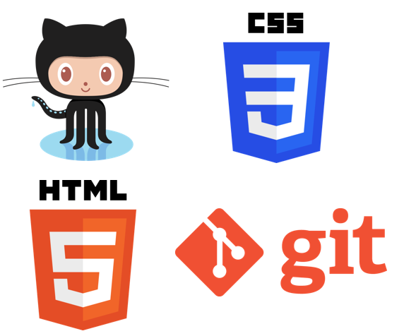

Es un software de control de versiones diseñado por Linus Torvalds. La pregunta es ¿qué es control de versiones? Pues bien, se define como control de versiones a la gestión de los diversos cambios que se realizan sobre los elementos de algún producto o una configuración del mismo es decir a la gestión de los diversos cambios que se realizan sobre los elementos de algún producto o una configuración
GITHUB
Es un servicio para alojamiento de repositorios de software gestionados por el sistema de control de versiones Git. Por tanto, Git es algo más general que nos sirve para controlar el estado de un desarrollo a lo largo del tiempo, mientras que Github es algo más particular: un sitio web que usa Git para ofrecer a la comunidad de desarrolladores repositorios de software.
Diseño de Sitios Web

Este sitio web fue creado para dar a las personas información sobre la creación de sitios web y el manejo de las herramientas GIT/GITHUB, HTML5 y CSS3, dando al usuario manuales y tutoriales de programación para así ayudar con información clara y concisa sobre creación de sitios web.
HTML5
HTML5 es un lenguaje markup (de hecho, las siglas de HTML significan Hyper Text Markup Language) usado para estructurar y presentar el contenido para la web. Es uno de los aspectos fundamentales para el funcionamiento de los sitios, pero no es el primero. Es de hecho la quinta revisión del estándar que fue creado en 1990. A fines del año pasado, la W3C la recomendó para transformarse en el estándar a ser usado en el desarrollo de proyectos venideros. Por así decirlo, qué es HTML5 está relacionado también con la entrada en decadencia del viejo estándar HTML 4, que se combinaba con otros lenguajes para producir los sitios que podemos ver hoy en día. Con HTML5, tenemos otras posibilidades para explotar usando menos recursos. Con HTML5, también entra en desuso el formato XHTML, dado que ya no sería necesaria su implementación.
CSS3
CSS son las siglas del inglés “Cascading Style Sheets” (Hojas de Estilo en Cascada) y básicamente consiste en la información que define como va a ser la presentación de una web. Cuando me refiero a presentación, me refiero a negritas, colores, efectos, tipos de letra que escogemos, … de tal manera que se independiza del HTML que es el lenguaje donde se estructura toda la información que se manda a nuestro ordenador para que el navegador nos presente esa bonita página web. Y CSS3 es la versión 3, donde se definen las características de este lenguje, digamos que en esta versión le han añadido muchas cosas y mejorado otras.
Estructura básica de HTML5
Buenas tardes, En el presente video podemos observar una guia que nos ayudara en la creacion de la estructura basica de HTML5.
Escuela, C. [Escuela CTEC]. (2013, Diciembre 19). VIDEOTUTORIAL -
Estructura básica de HTML5 [Archivo de video]. Recuperado de https://www.youtube.com/watch?v=PZoDLaOLcBM
Estrutura basica de un pagina HTML5
Buenas dia, En el presente video podemos observar una guia que nos ayudara en la creacion
Rizo Rodriguez, J.A. [Javier Alexander Rizo Rodriguez]. (2017, fEBRERO 26). VIDEOTUTORIAL -
Estructura básica de HTML5 [Archivo de video]. Recuperado de https://www.youtube.com/watch?v=SlrxCkGrjJw
Navegacion HTML5
Buenas tardes, En el presente video podemos observar una guia que nos ayudara en la estructura de navegacion de HTML5.
Buenas tardes, En el presente video podemos observar una guia que nos ayudara en el manejo de las etiquetas HTML5: SECTION, ASIDE, FOOTER.
Perdomo, M. [Mauricio Perdomo Vargas]. (2014, Octubre 17). VIDEOTUTORIAL -
HTML5: SECTION, ASIDE, FOOTER CON CSS [Archivo de video]. Recuperado de https://www.youtube.com/embed/-i4OHNoW8ms?ecver=1
Modelo caja
Falcon, M. [FalconMasters]. (2017, fEBRERO 26). VIDEOTUTORIAL -
Curso Basico de CSS - 5. Modelo de Caja [Archivo de video]. Recuperado de https://www.youtube.com/watch?v=SKkKLi1wAos
Selectores CSS3
Buenas tardes, En el presente video podemos observar una guia que nos ayudara en el manejo de selectores con CSS3.
Buenas dia, En este Video vamos a abordar una operativa básica del desarrollador y el trabajo con el sistema de control de versiones Git. Básicamente explicaremos los pasos para crear un nuevo repositorio en Github.
videos, I. [videosdeinformatica]. (2014, Febrero 03). VIDEOTUTORIAL -
GitHub - Crear un repositorio, validar cambios y sincronizar [Archivo de video]. Recuperado de https://www.youtube.com/watch?v=E3usf4UdkAI
Github Pages
Buenas dia, En este video podemos apoyarnos para la publicaion del Sitio Web en GITHUB PAGES.


 Es un software de control de versiones diseñado por Linus Torvalds. La pregunta es ¿qué es control de versiones? Pues bien, se define como control de versiones a la gestión de los diversos cambios que se realizan sobre los elementos de algún producto o una configuración del mismo es decir a la gestión de los diversos cambios que se realizan sobre los elementos de algún producto o una configuración
Es un software de control de versiones diseñado por Linus Torvalds. La pregunta es ¿qué es control de versiones? Pues bien, se define como control de versiones a la gestión de los diversos cambios que se realizan sobre los elementos de algún producto o una configuración del mismo es decir a la gestión de los diversos cambios que se realizan sobre los elementos de algún producto o una configuración